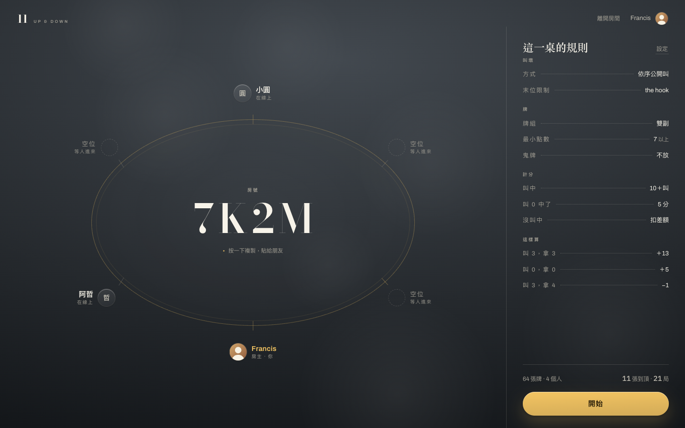
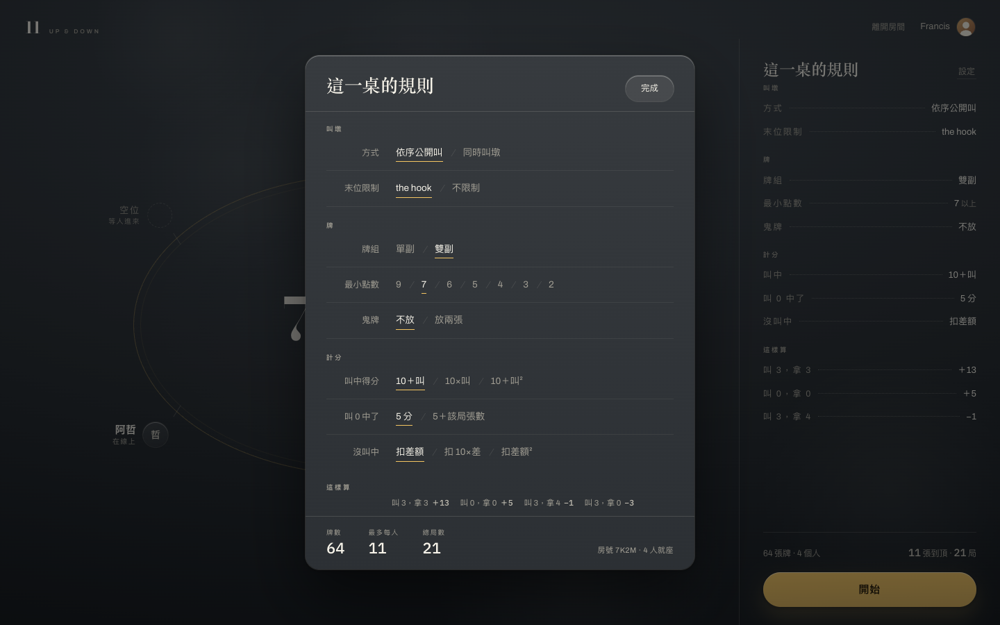
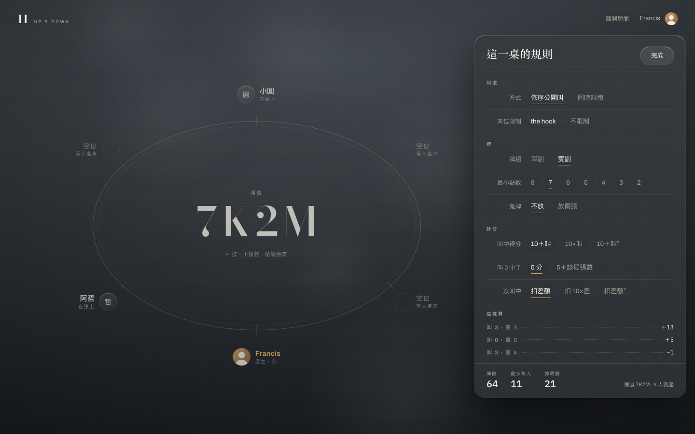
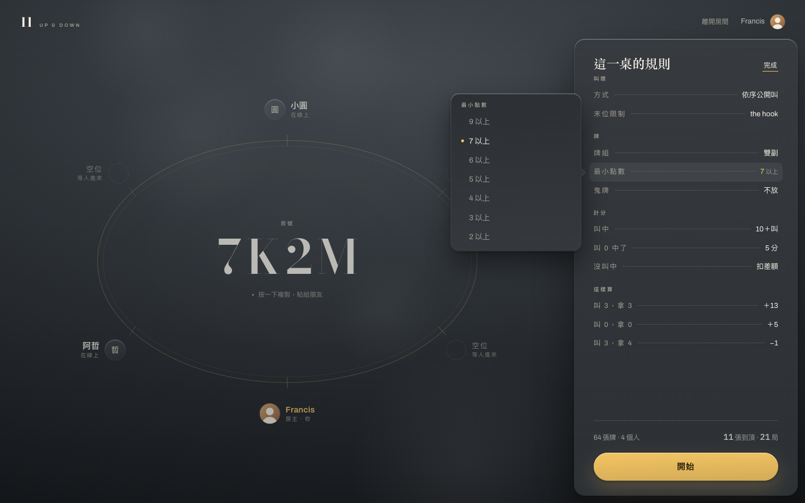
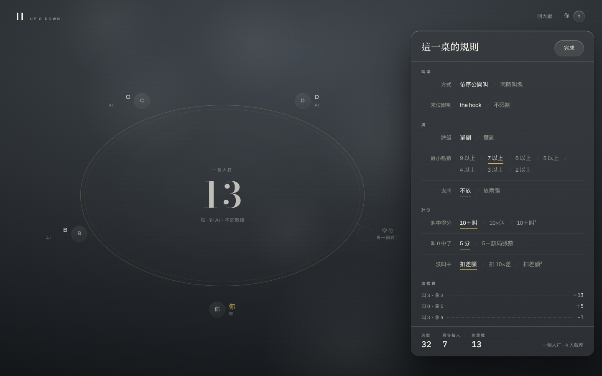
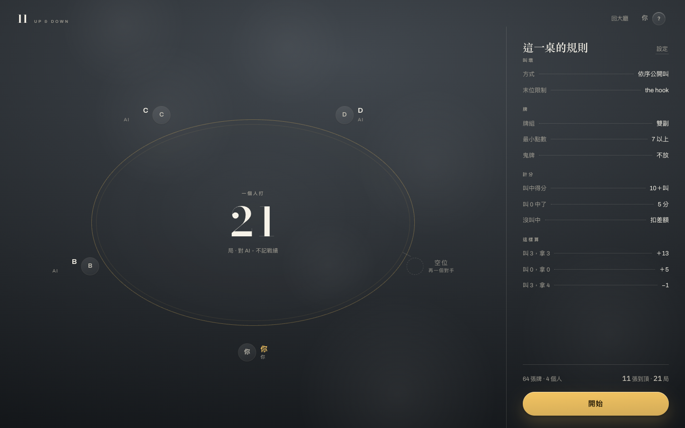
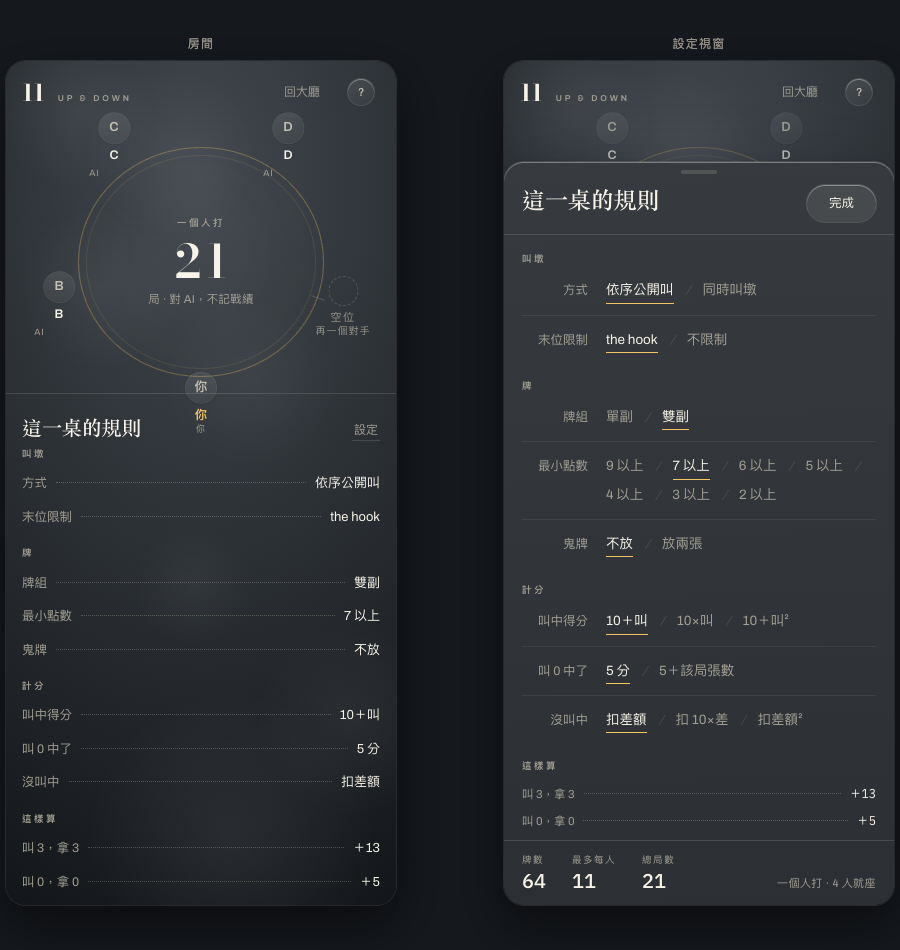
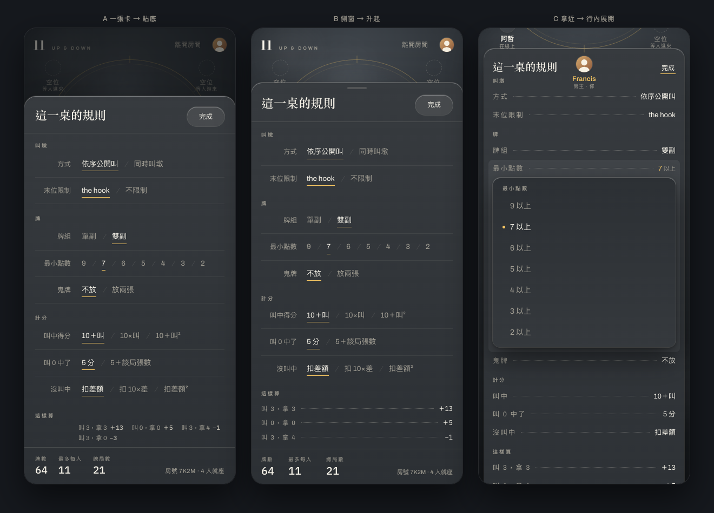

現在按「設定」是整頁換掉：座位表消失，八個規則攤在 1440px 上分兩欄， 中間一大片空白——選項不多，反而更難選。三案都把它改成一個展開來的視窗， 差別在視窗停在哪裡、以及一次要你面對幾個決定。 出發點都是同一頁（開房頁），按右欄那個「設定」進去。


八排收進一張 560 的紙。標籤靠右切齊，選項全部從同一條左界開始， 由上往下一條直線掃完，眼睛不必橫跨整個螢幕。最穩的一種，也最像一般的對話框； 代價是背後的桌子暫時不見了（壓暗到剩輪廓），改人數／看誰在座要先關掉它。 手機上從畫面底部貼上來。

位置就是答案。面板貼在右欄原來的位置、寬一點、浮起來， 左邊的座位表一格也沒被蓋到——牌數跟局數本來就是「幾個人」算出來的，改規則時看得到誰在座。 高度只取內容所需，不撐滿螢幕（撐滿就又變成一頁了）。代價是視窗比較窄， 最小點數那七個選項排得比較緊。手機上從底部升起。

不另開一份。按下設定，右欄那張紙從邊上浮起變成視窗——同一份清單、 同樣的順序、同樣的 leader dots，只是每一行現在都按得下去。點一行，選項在那一行旁邊跳出來， 一次只面對一件事，看的跟改的是同一張紙。底下那顆銅色「開始」不必讓位，改完直接開局。 代價是要逐行點開，想一次看完八欄現在各是什麼可以（清單一直都在），但想比較「這欄有哪些選項」要點進去。 手機上沒有左邊的空間，選單就地展開在那一行底下，並自動捲到畫面中間。




| 視窗在哪 | 桌子還看得到嗎 | 一次面對 | 關掉的方式 | |
|---|---|---|---|---|
| A | 畫面正中 | 壓暗到剩輪廓 | 八排全部 | 完成／Esc／點外面 |
| B | 右欄原位，往左長 60px | 全部看得到（稍暗） | 八排全部 | 完成／Esc／點外面 |
| C | 右欄那張紙自己浮起 | 全部看得到（稍暗） | 一欄 | 完成／Esc／點外面 |